class: center, middle # EE-463 STATIC POWER CONVERSION-I # Thermal Design in Power Electronics ## Ozan Keysan [ozan.keysan.me](http://ozan.keysan.me) Office: C-113 <span class="meta">•</span> Tel: 210 7586 --- # Thermal Design in Power Electronics -- ## Why is it important? -- ## Power Density (kW/l) <img src="https://charbycharge.com/store/wp-content/uploads/elementor/thumbs/Size-comparison-new-Square-scaled-ppuhfc46u2z668adnegovyzyfzihsijlugdmjmc80w.jpg" alt="Drawing" style="width: 500px;"/> --- # Thermal Design in Power Electronics -- ## Survivability <img src="http://jimbutterworth.co.uk/8module5.jpg" alt="Drawing" style="width: 500px;"/> --- # Thermal Design in Power Electronics -- ## Expected Life <img src="https://watergreat.com/images/capacitor_life.JPG" alt="Drawing" style="width: 700px;"/> --- # On the Machine (Load) Side ### Losses are dependent on temperature and temperature on losses -- ## Copper Losses \\(\propto\\) Resistance ## $$R(T) = R(T_0)(1 + \alpha\Delta T)$$ ### For copper (at 20 C) ### $$\alpha = 0.003862\;K^{-1}$$ --- # Methods for Thermal Analysis -- ### From difficult to easy -- - ## Experimental -- - ## CFD (Computational Fluid Dynamics) -- - ## FEA (Finite Element Analysis) -- - ## Lumped Parameter Model --- # Thermal CFD ## Requires intense computation <img src="https://laurencemarks.files.wordpress.com/2013/06/heatsink.jpg" alt="Drawing" style="width: 550px;"/> --- # Thermal FEA ## No air-flow <img src="https://quickfield.com/advanced/pcb_temperature.png" alt="Drawing" style="width: 650px;"/> --- # Thermal Lumped Parameter Network <img src="https://www.electronics-cooling.com/wp-content/uploads/2017/08/Figure2-1024x582.jpg" alt="Drawing" style="width: 700px;"/> --- # Basics of Heat Transfer -- 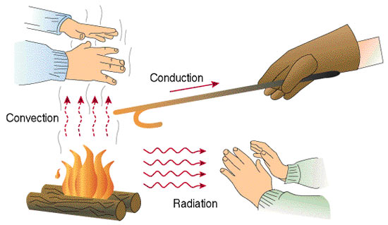 --- # Lumped Thermal Network ### Thermal systems can be represented as electric circuits -- ## Temperature = Voltage -- ## Heat Input = Current Source -- ## Thermal Conductivity = Electrical Conductivity -- ## Heat Capacity = Capacitance --- # Thermal Conductivity -- <img src="http://ecx.images-amazon.com/images/I/61oA4gophKL._SL1001_.jpg" alt="Drawing" style="width: 500px;"/> --- # Thermal Conductivity <img src="http://www.kisinambalaj.com/image/cache/catalog/kap-grubu/bar1-800x600.JPG" alt="Drawing" style="width: 600px;"/> --- # Thermal Resistance <img src="https://raw.githubusercontent.com/ozank/ozank.github.io/master/presentations/images/thermal_resistance.png" alt="Drawing" style="width: 600px;"/> --- # Thermal Resistance ### Similar to electrical resistance #\\(R= \dfrac{l}{kA}\\) -- - ## \\(k\\): thermal conductivity --- # Thermal Conductivity of Some Materials -- - ## Water: -- 0.58 W/(mK) -- - ## Ice: -- 2.2 W/(mK) -- - ## Concrete: -- 1-1.5 W/(mK) -- - ## Wood: -- 0.12 W/(mK) -- - ## Asbestos: -- 0.08 W/(mK) --- # Thermal Conductivity of Metals -- - ## Aluminum: -- 205 W/(mK) -- - ## Iron: -- 80 W/(mK) -- - ## Copper: -- 400 W/(mK) -- - ## Gold: -- 310 W/(mK) -- - ## Epoxy: 0.35 W/(mK) -- ### [Ref](http://en.wikipedia.org/wiki/List_of_thermal_conductivities) --- # Conduction Heat Loss # \\(P = \dfrac{\Delta T}{R}\\) # \\(P = \dfrac{T\_2 - T\_1}{R}\\) --- # Convection # Heat transfer on the surface between solids and liquids (or gaseous) --- # Convection ## Difficult to analyze accurately -- ## Two types of Convection: -- - ## Natural Convection -- - ## Forced Convection --- # Types of Flow -- - ## Laminar FLow -- - ## Turbulent Flow ### Enhanced heat transfer --- # Turbulance <img src="https://nanosync.files.wordpress.com/2011/03/offshore_hdt_019op.jpg" alt="Drawing" style="width: 700px;"/> --- # Heisenberg: -- <img src="https://i0.wp.com/ares.shiftdelete.net/580x330/original/16-12/13/heisenberg-breaking-bad-walter-white-gq.jpg" alt="Drawing" style="width: 600px;"/> ## Not Walter White --- # Heisenberg <img src="http://www.nature.com/polopoly_fs/7.11207.1372177498!/image/1.13270_Heisenberg-ALAMY-B3YK1N.jpg_gen/derivatives/landscape_630/1.13270_Heisenberg-ALAMY-B3YK1N.jpg" alt="Drawing" style="width: 500px;"/> ### Werner Heisenberg: Key creator of quantum mechanics, uncertainity principle --- # Heisenberg: "I would ask God two questions; -- #Why quantum mechanics, and why turbulence ?" -- #I think he will have answer for the first one. --- ## Convection Thermal Resistance -- # \\(R_c = \dfrac{1}{A h}\\) -- ## A: Area -- ## h: Convection heat transfer coefficient (W/m2/C) --- # h: Convection Heat Transfer Coefficient -- ## Depends on the surface properties -- ## Flow Rate, density -- ## Reynolds Number -- ## And others (Nusselt number, prandtl number) --- # Rule of Thumbs ### Not very accurate but useful for initial calculations -- ## Heat Transfer Coefficient -- - ## Air-Natural Convection: 5-10 W/(m2.C) -- - ## Air-Forced Convection: 10-300 W/(m2.C) -- - ## Liquid-Forced Convection: 50-20.000 W/(m2.C) #### More info: [Estimating Parallel Plate-Fin Heat Sink Thermal Resistance](https://www.electronics-cooling.com/2003/02/estimating-parallel-plate-fin-heat-sink-thermal-resistance/), [Iterative calculation of the heat transfer coefficient](https://lisafea.com/pdf/Convection_heat_transfer_coefficient.pdf) --- # Radiation -- ## Radiant Heaters <img src="http://willowbrookhangars.com/wp-content/uploads/2014/01/AmbiRad-radiant-tube-heater.jpg" alt="Drawing" style="width: 750px;"/> --- ## Radiant Heaters <img src="http://www.gardenista.com/wp-content/uploads/2015/04/img/sub/uimg/05-2012/700_endless-summer-and-dcs-patio-heaters-700x516.jpg" alt="Drawing" style="width: 700px;"/> --- # Reflective Blankets <img src="https://images.tokopedia.net/img/cache/900/VqbcmM/2021/3/9/50961c99-b028-4775-8212-085ee86dcf7d.jpg" alt="Drawing" style="width: 500px;"/> --- # Radiation Heat Loss (Black body radiation) ### \\(q_R\\): radiation heat flow (W/m2) ## \\(q\_R = \rho \epsilon F (T\_1^4-T\_2^4)\\) -- ### \\(\rho\\): Stefan-Boltzmann constant (\\(5.67\:10^{-8} W/m^2/K^4\\) ) -- ### \\(\epsilon\\): emissivity of radiating surface (ε ≤ 1) -- ### \\(F\\): view factor (≤ 1) – calculated from geometry -- ### \\(T\_1, T\_2\\) absolute temperature of radiant and ambient (K) --- # Radiation Heat Transfer ### \\(h_R\\): heat transfer coefficient for radiation (for lumped parameter network) ## \\(h\_R = \dfrac{\rho \epsilon F (T\_1^4-T\_2^4)}{T\_1 - T\_2}\\) -- ### \\(\rho\\): Stefan-Boltzmann constant=\\(5.67\:10^{-8} W/m^2/K^4\\) -- ### \\(\epsilon\\): emissivity of radiating surface (ε ≤ 1) -- ### \\(F\\): view factor (≤ 1) – calculated from geometry --- # Emissivity of Materials -- ### Have you ever wondered why most heat sinks are black? -- <img src="https://www.fischerelektronik.de/fileadmin/_migrated/pics/fk252gr.jpg" alt="Drawing" style="width: 600px;"/> --- # Emissivity of Materials ## Aluminum: - ### Black anodized: 0.86 - ### Polished: 0.04-0.1 -- ### Radiation is more dominant with naturally cooled heat sinks, than the ones with forced cooling ### More info: - #### [Anodized Aluminum Heat sinks: What You Need to Know](https://www.gabrian.com/anodized-aluminum-heatsinks-what-you-need-to-know/) - #### [How Heat Sink Anodization Improves Thermal Performance](http://www.qats.com/cms/2010/11/09/how-heat-sink-anondization-improves-thermal-performance-part-1-of-2/) <!-- # Fluid Temperature Rise ### For a liquid cooled system # \\(\Delta T = \dfrac{P}{Q . d. C\_p}\\) ### \\(Q\\): Volume flow rate (m3/s) ### \\(d\\): Density ### \\(C\_p\\): Specific heat capacity (J/kgC) --> --- # Size vs Thermal Performance -- <img src="http://blog.sciencescore.com/media/elephant-ears1.jpg" alt="Drawing" style="width: 850px;"/> --- ### [Who’ll Freeze First? A Puzzle About Size and Staying Warm](http://noticing.co/on-size-and-warmth/) --- 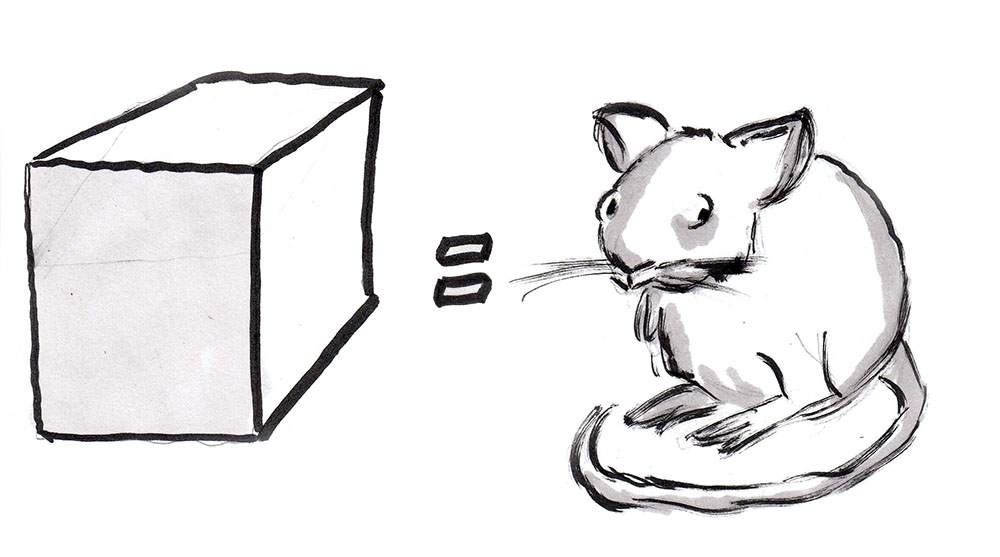 ### [Who’ll Freeze First? A Puzzle About Size and Staying Warm](http://noticing.co/on-size-and-warmth/) --- 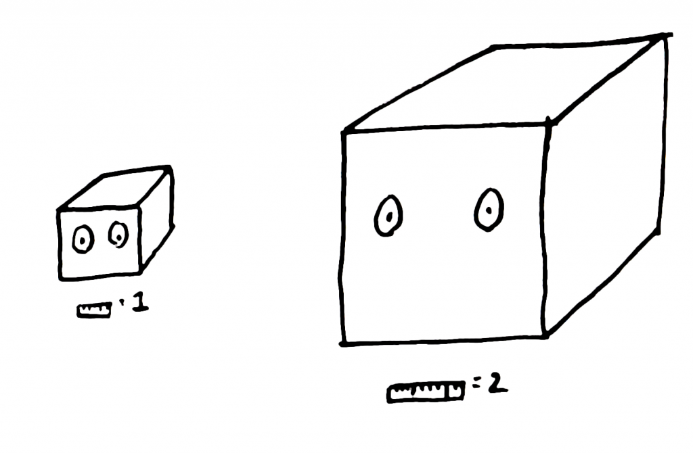 ### [Who’ll Freeze First? A Puzzle About Size and Staying Warm](http://noticing.co/on-size-and-warmth/) --- 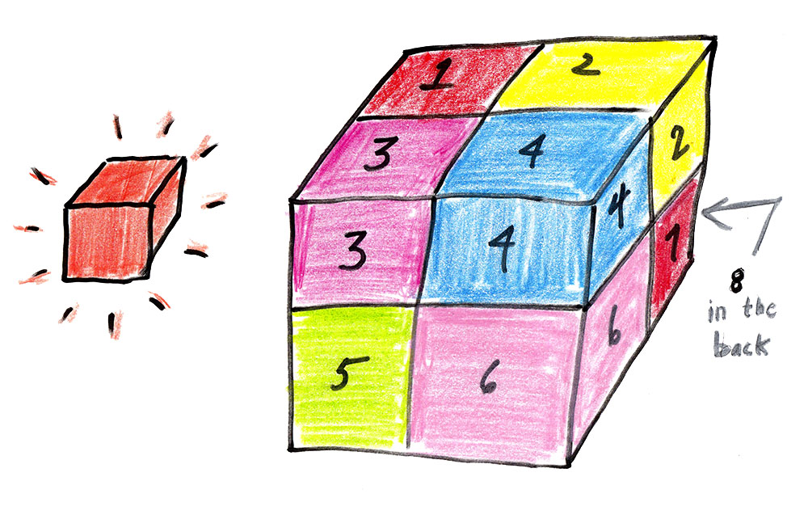 ### [Who’ll Freeze First? A Puzzle About Size and Staying Warm](http://noticing.co/on-size-and-warmth/) ###[Size and Metobolism](http://noticing.co/on-size-and-metabolism/) --- ## (Heat \\(\propto\\) Volume, but Heat Dissipation \\(\propto\\) Area) <img src="https://upload.wikimedia.org/wikipedia/commons/4/43/Angry_elephant_ears.jpg" alt="Drawing" style="width: 500px;"/> ### [Square-Cube Law by Prof. Walter Lewin](http://www.youtube.com/watch?v=qoM17ikreio) ### [Square-cube law, small is mighty](https://www.youtube.com/watch?v=qzq710aOHjE) --- ## Thermal Design in Power Electronics -- - ### Determine your components -- - ### Calculate the losses -- - ### Get the thermal resistances from data sheet -- - ### Determine the max. Heat sink thermal resistance -- - ### Find a heat sink, decide on cooling type (natural, forced) -- - ### Iterate until you get a reasonable operating temp. --- # Typical Thermal Circuit 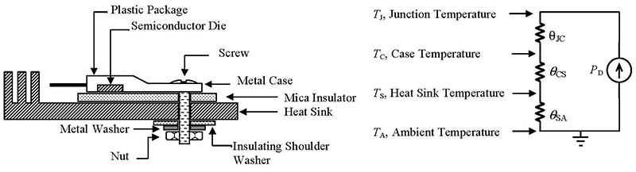 --- # Typical Thermal Circuit 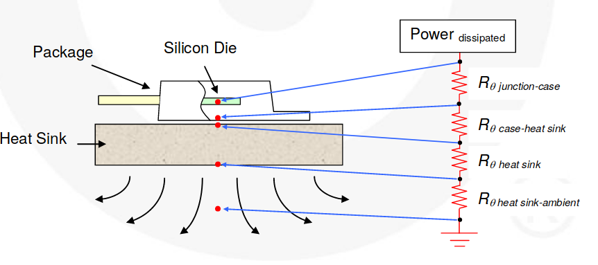 --- # Typical Thermal Circuit <img src="http://jestineyong.com/wp-content/uploads/2012/06/heatsink1.jpg" alt="Drawing" style="width: 750px;"/> -- ### Capacitances can be neglected for steady state analysis. ### Be careful with low heat capacity (tiny) components --- # Design Exercise -- - ### [IGBT: STGW40H120DF2](http://www.st.com/resource/en/datasheet/stgw40h120df2.pdf) -- ### Find relevant parameters: -- ### Package Type ### Junction to Case Thermal Resistance ### Junction to Ambient (if used without a heatsink) --- # Design Exercise - ### [IGBT: STGW40H120DF2](www.st.com/resource/en/datasheet/stgw40h120df2.pdf) ### Don't forget the freewheeling diode <img src="http://www.ni.com/cms/images/devzone/tut/image458298215476905931.jpg" alt="Drawing" style="width: 750px;"/> --- # Choose a Heatsink <img src="https://www.allaboutcircuits.com/uploads/articles/heatsink_diagram-revise.png" alt="Drawing" style="width: 500px;"/> ### [How to mount heatsinks?](https://usermanual.wiki/Pdf/AN416620Heat20Sink20Mounting20Guide.1650589937/pdf) #### Useful links:[Online Heat Sink Calculator](https://www.heatsinkcalculator.com), [Heat Sink Calculator](https://www.allaboutcircuits.com/tools/heat-sink-calculator/), [Characteristics of common packages](http://www.giangrandi.ch/electronics/thcalc/thcalc.shtml), [Heat Sink Calculator, Forced Cooling](https://heatscapecal.com/) --- # Choose a Heatsink ### Suitable for TO-247 Package -- <img src="https://www.fischerelektronik.de/fileadmin/_migrated/pics/leiterplattenkuehlkoerper_20_2.jpg" alt="Drawing" style="width: 400px;"/> -- - ### [R2A-CT4-38E - Heat Sink](http://www.newark.com/ohmite/r2a-ct4-38e/to-247-heat-sink/dp/73T7839) --- # Choose a Heatsink ### Suitable for TO-247 Package ## Check: - ### Heatsink to ambient thermal resistance -- - ### Thermal resistance vs. air flow --- # How to -- - ## Calculate losses? -- - ## Junction temperature -- - ## Maximum operating limit --- # Tips & Things to consider -- ## Beware of hot spot and other heat sources! <img src="https://content.iospress.com/media/jae/2018/56-3/jae-56-3-jae170113/jae-56-jae170113-g020.jpg" alt="Drawing" style="width: 750px;"/> --- # Tips & Things to consider ## Beware of hot spot and other heat sources! 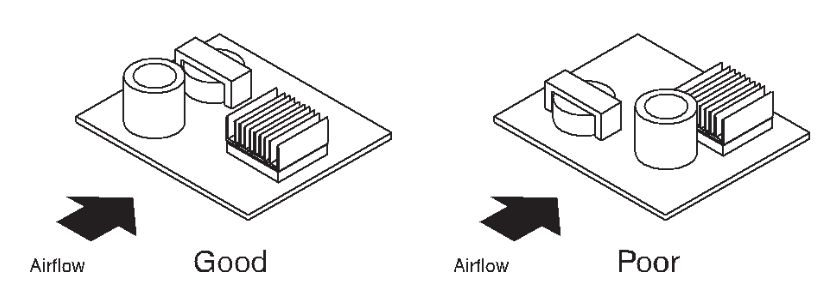 --- # Tips & Things to consider -- ## Transients operating conditions! ### Can be dominant for small (low heat capacity) components <img src="https://www.electronics-cooling.com/wp-content/uploads/2016/09/graph-1-1024x1024.jpg" alt="Drawing" style="width: 450px;"/> --- # Tips & Things to consider ## Consider air flow (both for forced and natural cooling) 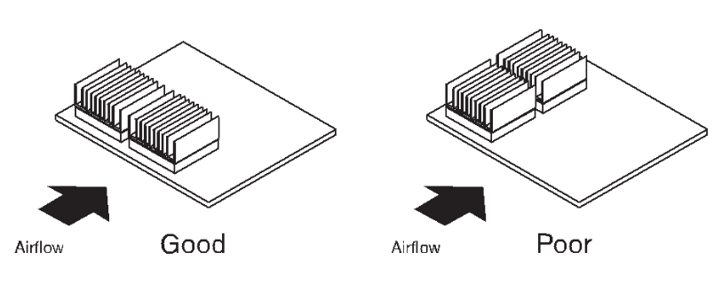 --- # Tips & Things to consider ## Consider air flow (both for forced and natural cooling) 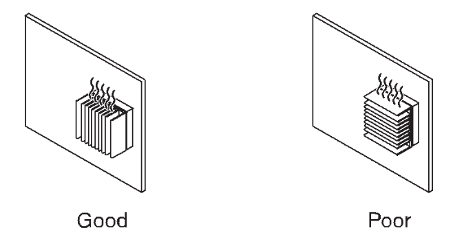 --- # Tips & Things to consider -- ## Ambient Temperature ### Not always at 25 C. Check the standards -- - ## Commercial: 0 ° to 70 °C - ## Industrial: -40 ° to 85 °C - ## Military: -55 ° to 125 °C --- # Tips & Things to consider -- ## Non idealities in contact surface -- <img src="https://cdn.comsol.com/wordpress/2014/08/Thermal-contact-resistance.jpg" alt="Drawing" style="width: 750px;"/> --- # Tips & Things to consider -- ## Imperfections of the contact surface -- ## That's why we use TIM ( Thermal Interface Material) <img src="http://www.sg-thermal.com/uploads/thermal_interface_pad_sheet.jpg" alt="Drawing" style="width: 500px;"/> --- # Tips & Things to consider ## Thermal Interface Materials - ## Greases, Putties - ## (Adhesive) Thermal Pads - ## Epoxy, Potting compounds - ## [and others](https://www.digikey.com/eewiki/display/Motley/Thermal+Interface+Materials) --- # Tips & Things to consider ## Too much paste does more harm than good 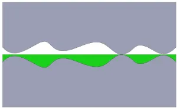 ## Insufficient thermal paste --- # Tips & Things to consider ## Too much paste does more harm than good 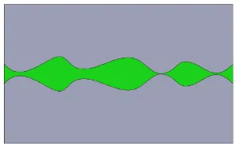 ## Ideal thickness --- # Tips & Things to consider ## Too much paste does more harm than good 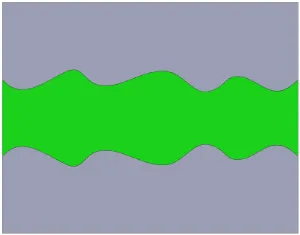 ## Excessive thermal paste --- # Tips & Things to consider ## Avoid excessive mounting torque 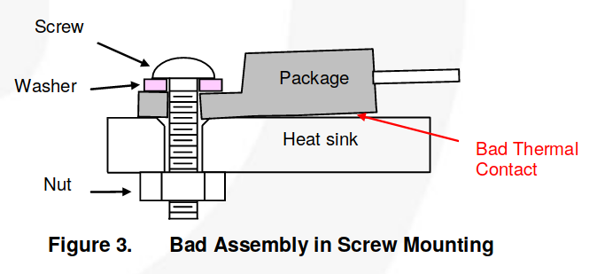 --- # Tips & Things to consider -- ## Non-uniform cooling ### Especially on stacked components on single heatsink <img src="https://i.stack.imgur.com/AUsWM.jpg" alt="Drawing" style="width: 450px;"/> --- # Useful Readings: ### Application notes are your friends -- - ### [Thermal Resistance Theory and Practice](https://www.infineon.com/dgdl/smdpack.pdf?fileId=db3a304330f6860601311905ea1d4599) - ### [Thermal resistance of IGBT Modules, Semikron](https://www.semikron.com/dl/service-support/downloads/download/semikron-application-note-thermal-resistances-of-igbt-modules-en-2014-11-30-rev-01/) - ### [Thermal effects and junction temperature evaluation of Power MOSFETs](http://www.st.com/content/ccc/resource/technical/document/application_note/7b/bb/a2/32/f5/9d/46/2f/DM00241971.pdf/files/DM00241971.pdf/jcr:content/translations/en.DM00241971.pdf) - ### [Heat sink Characteristics, IR](https://www.infineon.com/dgdl/an-1057.pdf?fileId=5546d462533600a401535591d3170fbd) - ### [Thermal Design of Power Electronic Circuits](https://arxiv.org/pdf/1607.01578.pdf) --- # Useful Readings (cont.): - ### [How to mount heat sinks?](https://www.eg.bucknell.edu/~dkelley/eceg351/FairchildHeatsinkMountingGuide.pdf) - ### [A thermal management example](https://www.digikey.com/eewiki/pages/viewpage.action?pageId=68976759) - ### [A Thermal Management Example Part 2:](https://www.digikey.com/eewiki/pages/viewpage.action?pageId=71958564) - ### [Thermal Interface Materials](https://www.digikey.com/eewiki/display/Motley/Thermal+Interface+Materials) - ### [How to select a heat sink](https://www.cuidevices.com/blog/how-to-select-a-heat-sink) --- ## You can download this presentation from: [keysan.me/ee463](http://keysan.me/ee463)